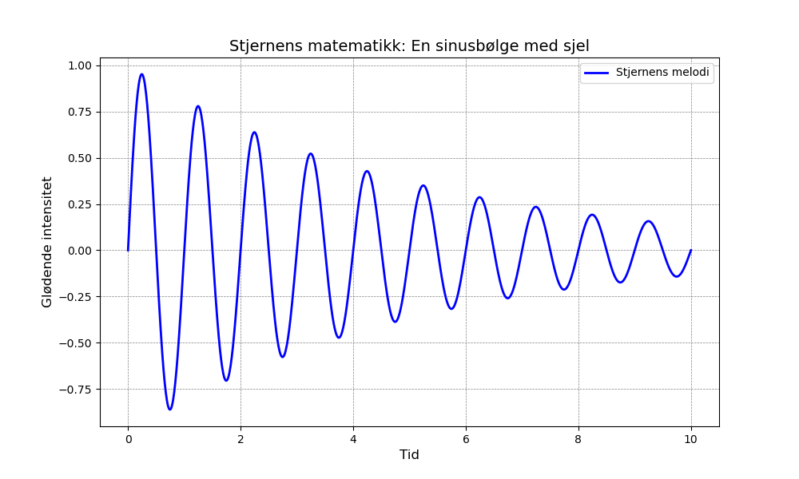

Dagens dikt
En ensom stjerne lyser klart,
Høy på nattehimmelen, som en kunstform - svart.
Den svinger og gløder i en bane så mild,
Sin egen melodi har den spilt.
Et buktende kaldt lys, en matematisk linje,
Fra kaos til harmoni, dens vei må vi finne.
En sinusbølge av skiftende sjel,
Refleksjoner av verdener vi aldri ser helt.
Den skaper sitt spor, en buet kurve,
Spiller i mønstre som får tankene til å svømme.
Så la oss kode dens dans, dens matematikk,
For stjernens evighet – et digitalt blikk.
---

Kode
import numpy as np
import matplotlib.pyplot as plt
# Definisjon av den matematiske representasjonen av diktet
x = np.linspace(0, 10, 1000) # Horisontell akse: tiden til stjernen
wave = np.sin(x * 2 * np.pi) * np.exp(-x / 5) # Sinus, men oppmyket av eksponentielt forfall
# Plotting av stjernens dans
plt.figure(figsize=(10, 6))
plt.plot(x, wave, label="Stjernens melodi", color="blue", lw=2)
# Estetiske justeringer basert på diktets tone
plt.title("Stjernens matematikk: En sinusbølge med sjel", fontsize=14)
plt.xlabel("Tid", fontsize=12)
plt.ylabel("Glødende intensitet", fontsize=12)
plt.legend(loc="upper right", fontsize=10)
plt.grid(color='gray', linestyle='--', linewidth=0.5)
plt.savefig('2025-03-20-20-01-51.png')